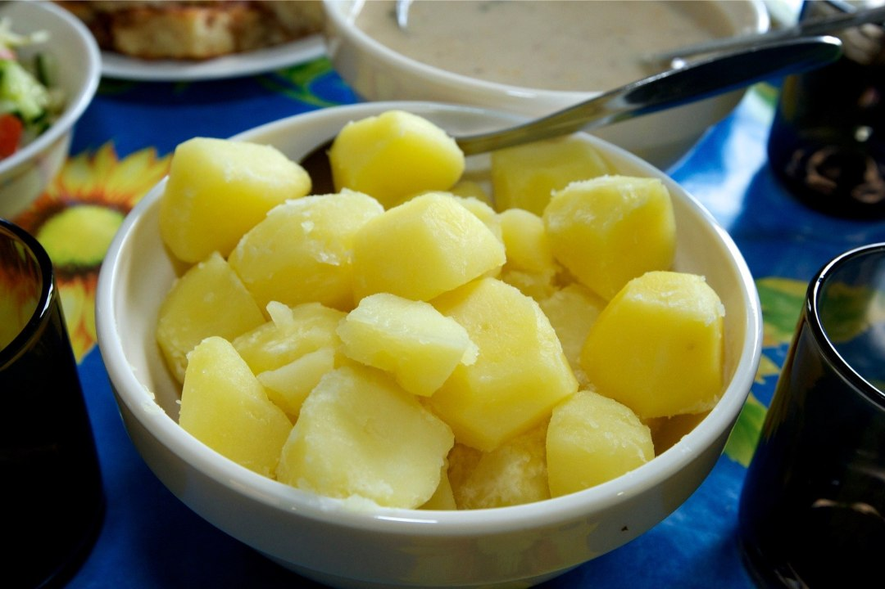

Keedukartul

Eestlaste põhiline toit on kartul. Lihne õpetus kuidas neid keeta
Koostisosad
- Kartulid
- Sool
- Vesi
Valmistamine
- Koori kartulid ja lõika need pooleks
- Lisa kartulid potti
- Lisa potti vesi ja sool. Veetase potis peaks olema 1cm kõrgemal kui kartulid
- Keeda seni kuni kahvel läbi kartuli sujuvalt läheb
- Kurna vesi
- Naudi!